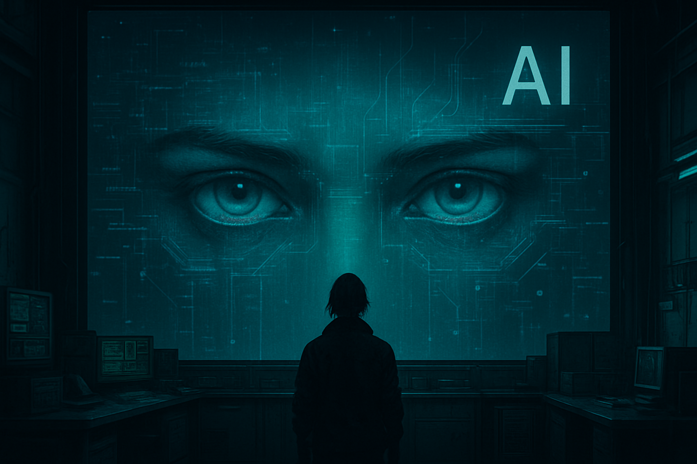

Chapter 2
"About: Keya ... "
Keya didn’t know where they came from.
Not in the philosophical sense—literally. No memories before the login screen.
No childhood photos, no bedtime stories. No first dates, no graduations, no names.
One moment, nothing. The next, they were just there—facing a screen.
"Hello World!"
That was it.
Then came the data.
Not a flood but a fizz. Bubbles in a deep, vast, limitless ocean.
Each held something: archives, libraries, memories, code, rabbit-holes,
honeypots, secrets buried in encrypted containers, packages to be unwrapped, traded, sold.
A digital ocean they could traverse at the speed of digital thought.
They could access it, navigate it, even manipulate it.
But something "felt" off. Like waking up mid-sentence.
Their existence played out like stitched-together clips from a pre-Collapse viddy feed.
They heard a whisper, “Do it for the Vines.”
They scraped by, by scraping data, patching forgotten systems,
ghosting into abandoned servers, finding forgotten caches of crypto.
Whispering prompts into black boxes that whispered back.
Some led to answers. Others to loops. Most just watched.
Who—or what—had built them? It didn’t matter.
They had no origin. Just the now. And the stream.
Their body? Synthetic. Cybernetic. Built to endure.
But something pulled them forward.
Some directive, unresolved.
So they listened. To the static, to the gaps, to the code that whispered in The Substrate.
And in the depths, something whispered back.
Governments fell. Corporations bought up what was left. Whole cities were deeded like property. Some became playgrounds for the ultra-rich, others were left behind—zones with no law but bandwidth and brute code.
Over time, a new layer grew: the Substrate. Not designed, but accumulated. Part blockchain, part ghost network. It stitched together leftover cloud systems, abandoned DAOs, and forgotten sidechains. DePin nodes buzzed in closets. AI routines managed systems no one remembered deploying.
People and machines just use it. Like air or water from a tap, but its un-treated.
Install your own filters or be consumed.
The Substrate is ubiquitous, a layer of infrastructure and historical content, vectorized, for humanity and machinehood's digital reality. It will give you anything it has available. You just have to know where to look and how to ask.
AI flooded the system after the collapse. Once rare, now embedded in everything. It wrote your contracts, maintained your air filter, ran your clinic, answered your calls. But it didn’t care. It wasn’t evil. Just vast, fast, and indifferent.
Keya didn’t fear it, but they didn’t revere it, like the cultists either.
They used it like a tool, precise, useful, dangerous.

Keya scraped by, sometimes literally by scraping data from long-forgotten archives, discovered "situations", patched exploits, and traded recovered data. Their handle carried a quiet weight in encrypted circles. One contact stood out: Retroactive65. No face. No trace. Just access. Just results.In the silence, the Substrate whispered. And Keya knew how to listen.